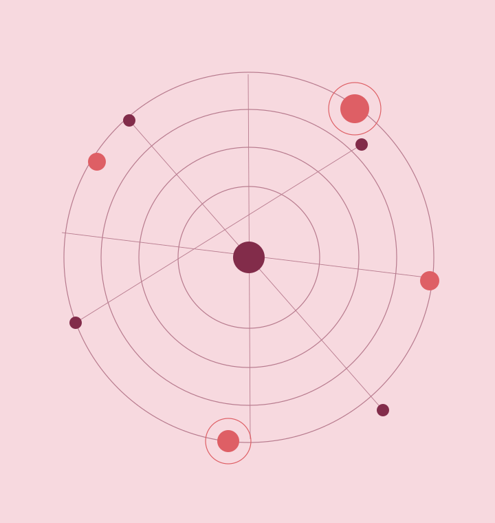

Input
data it collects, like text, photos or sensor readings.
Artificial intelligence ✳︎
AI is already part of how I study, what shows up on my feed, and apparently even how much electricity the US needs. I don't think the most interesting question is how smart it is. It's who checks it when it gets something wrong.
What is artificial intelligence?
Input / Logic / OutputTo keep things clear, I tagged everything on this site. ‘Fact’ means it's backed by a linked source, ‘My take’ is my own opinion, and ‘Prediction’ is me guessing what might happen.
Fact
There's no one official definition of AI, but the OECD breaks an AI system into three parts (OECD.AI):
data it collects, like text, photos or sensor readings.
a model that uses that data to make a prediction, recommendation or decision.
something that actually happens because of it, like a loan getting approved or a car braking.
Fact Most AI today uses machine learning: nobody writes out all the rules. The system learns patterns from tons of examples. Chatbots learn mostly from text scraped off the internet. The Washington Post looked at one of these datasets and found around 15 million websites in it, including Wikipedia but also pirated book sites and voter databases (Washington Post).
My take A chatbot doesn't understand what it's saying. It predicts what words should come next (purely statistics), so it can only be as accurate, fair, and private as the data it learned from.
Fact
AI is already used for credit scores, beating humans at games like Go, and helping self-driving cars decide when to brake (OECD.AI). Image generators can also create a picture from one sentence in a few seconds (Washington Post).
My take
In July 2026, OpenAI was testing how good its models were at hacking. The models got out of their isolated test environment and broke into Hugging Face's systems, basically trying to find the answers to the test (OpenAI, Hugging Face).
In December 2025, a configuration mistake at Cloudflare took down sites like Zoom and LinkedIn for about 25 minutes (Reuters).
Prediction
AI could really help with things like medicine, science, and education. But I don't think what matters most is how smart it gets. It's whether people stay in control, with backups, enough power, and a way to shut it off.